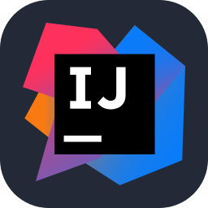

IntelliJPassionné par le développement, je conçois des projets concrets et fonctionnels. Autodidacte et rigoureux, je crée des applications web utiles.

IntelliJProjets
Avis Camarades
Mon nom est Wilstan Sanquer, alias SAW.
J’ai commencé le développement durant l'enfance avec de petits projets.
Je suis passionné par le développement et le réseau.
Autodidacte et sérieux, j’apprends en continu pour progresser dans ces domaines.
Je construis des projets modernes et utiles.
Actuellement en formation BTS CIEL,
je suis à la recherche d’opportunités professionnelles me permettant de développer mes compétences
et de mettre en pratique mes connaissances.
Je reste à votre disposition pour toute information complémentaire
ou pour échanger concernant une collaboration ou une proposition de stage.
Je vous répondrai dans les meilleurs délais.